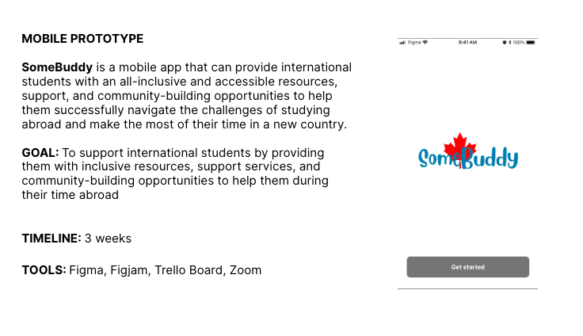

International students often struggle to find the resources and support they need to succeed in a new country. They face a variety of challenges, including navigating a new academic and cultural environment, and finding social connections.
A mobile app that can provide international students with an all-inclusive and accessible resources, support, and community-building opportunities to help them successfully navigate the challenges of studying abroad and make the most of their time in a new country.

I conducted interviews with 5 participants through Zoom meetings. 21 questions were asked, focusing on three key concerns:
After reviewing the interview transcripts, we found that majority of our participants faced similar problems:

After reviewing the interview transcripts, we found that majority of our participants faced similar problems:
“It’s easier to relate to and to communicate to [a person] vs. a website.”
“Medications are not easily accessible in other countries.”
“Asking for my Covid vaccine records that are in my email that I cannot access... I shouldn't have to go through my phone for these things. Just ask me stuff that I can easily access from my wallet."
The key points that were found during our user interviews were sorted into categories to determine what should be the main focus on the travel app.
Based on the number of points in each category, we determined which topics should be focused on. In this case, health, technical aptitude, planning preferences, and personal concerns had the most points and, therefore, will be the main focus for the travel app.
.png)
Based on the research, I developed the user persona "Boomer Bob" to target the user.
Boomer Bob loves traveling to spend time with his family. He displays some health concerns that can affect his travels and is worried that due to his lack of technical knowledge, his enjoyment during his trip will be decreased.

Boomer Bob, who is a senior citizen with an old fashioned view on life and would rather handle things without the use of technology, needs to find an easier way to plan and enjoy a vacation. Most websites and apps are not catered towards seniors, making it overwhelming and preventing him from traveling due to his fears and concerns in regard to his health and old age interfering with his trip.
Senior citizens with a traditional view on life and who are uncomfortable relying on technology, need to find a way to successfully plan their trip online without having their medical concerns hinder their travel plans because they get frustrated and overwhelmed when creating an itinerary on their own. How might we help senior citizens who face barriers to technology plan their trip to accommodate to their medical concerns to improve their enjoyment and peace of mind while away from home?

To organize the feedback that was gathered from the user interviews, the “I like, I Wish, What If” method was used to display statements that could help develop what elements would be important for creating a prototype for the travel app.
These statements would allow me to understand what users currently like, their desires, and future possibilities for a travel app.

The statements were then sorted using the MoSCow Method to determine the prioritization of certain elements and features that the travel app should be focused on.
For example, one feature that is a high priority for our app, is to offer offline functionality, allowing access to certain features without internet connection.

My app, TripPal, is developing a user friendly tool to assist elderly travellers solve planning trips that accommodate to their medical and health needs that will increase a peace of mind when away from home and decrease pain, worry, and stress.
We’re better because our app prioritizes the perspective of the elderly and is tailored specifically with their needs in mind to allow for more time spent with family rather than being consumed with their phone.
We’re believable because of our repeated users who successfully plan their travel itineraries using our app.
To further help with the visualization of the flow of how the user will be introduced to the app, accomplish their goals, understand their experience, and how their problems are resolved, I created a User Journey Map.

To gain better insight on how my app should work, I used a Competitor Analysis to analyze and evaluate certain feature from competing apps such as Tripadvisor, Expedia, and Wanderlog.

After the conducting the research, developing a user persona, and creating a user journey map, I started creating the User Flow to demonstrate the anticipated interaction between the user and TripPal. The user flow below illustrates the onboarding and signing up portion for the app.


After designing the prototype, I conducted four Usability Tests to gain feedback for TripPal. The three tasks that the users had to perform were:
After gaining feedback from the participants, I was able to prioritize the points that were made using a Matrix. By doing this, I can focus on how to improve the experience for users.
One thing that I noticed about many users, is that they clicked on the images rather than the words when navigating to another screen. By making the images clickable as well, it can create easier navigation for users.


After conduction the user testing, I was able to put together the final product. The purpose of TripPal is to help create an easier way to plan trips and travel for senior citizens. When designing the app, it was important for me to keep in mind the barriers that seniors currently face in regards to technology. For example, I made sure to include big icons with descriptive words to create less confusion, high contrast for the colors to make it easier to view, and to make it readable by keeping the font style to sans serif.


With this project, I was able to learn and gain valuable insight in regards to user behaviours, app usability, design patterns, and more. Specifically focusing on senior citizens made me learn more about the issues that many individuals face regarding accessibility and navigation that one might not think about otherwise. When designing apps, it is very important to focus on the target user while still keeping it accessible to everyone. Overall, I hope to further develop TripPal by creating a High-Fidelity mockup and to keep on looking to improve the user experience.